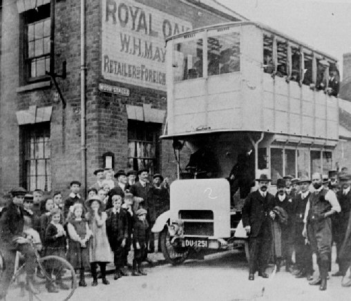

Earlsdon Family History There is wealth of local history information about Earlsdon in these pages but below are some links to help those with a specific interest in the history of Earlsdon's families. If you know of other Earlsdon family history information online please let us know. Earlsdon Family History Register
As with so many group photographs this one remains much of a mystery. It is probably a group of girls associated with St Barabara's in Palmerston Road, who met to practice their ‘keep fit’; a sort of early aerobics group. Most of the exercises involved swinging the clubs about that can be seen laid down in the front of the group. To judge from the medals they are wearing there could be a competitive dimension to this activity. It looks as if their manager did not believe in joining in.
Earlsdon RFC had its origins amongst the Methodists of the area and first got the name ‘Old Boys’ in 1904/5. They first played on Wise’s Field off Beechwood Avenue until the First World War when their pitch was dug up for food production. On being re-established in 1919 they adopted their current name, Earlsdon RFC.
Is there anyone out there who knows anything about Miss Steane's School in Moor Street? If so, please contact us and tell us more. |